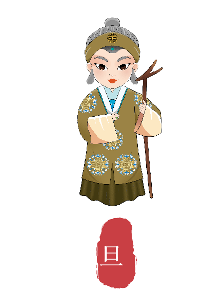
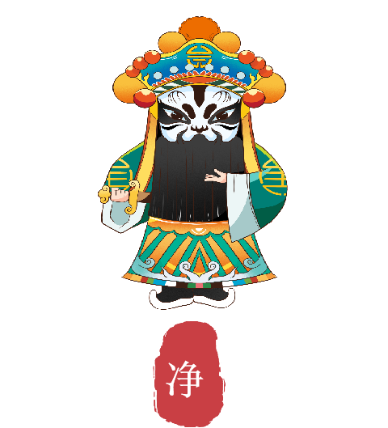

让戏曲走近每一代人
从一段唱腔、一张脸谱到一次社区共演以数字工具降低参与门槛，让传统文化在真实生活中被看见、被理解、被接续
技术退到幕后，内容与参与者站到台前。每个入口既能独立体验，也能融入文明实践站的日常活动。
说出一个人物或故事，形成可朗读、可保存、可继续修改的戏曲小片段。
从生、旦、净三类形象出发，认识行当气质与数字化呈现方式。
通过剧种卡片、脸谱涂色和听音闯关，让孩子在动手中认识戏曲。
大字、高对比、语音优先，一键点播熟悉唱段，也能参与戏词接龙。
以经典现代戏和红色故事为入口，服务节庆导赏与思政微课堂。
用多语种导赏卡片解释角色、程式与审美，让更多人读懂中国戏。
把线上内容带进文明实践站，与真人展演、身段教学和手工体验衔接。
以居民真实需求为起点，让每一次活动都能留下内容、反馈与下一次迭代的依据。